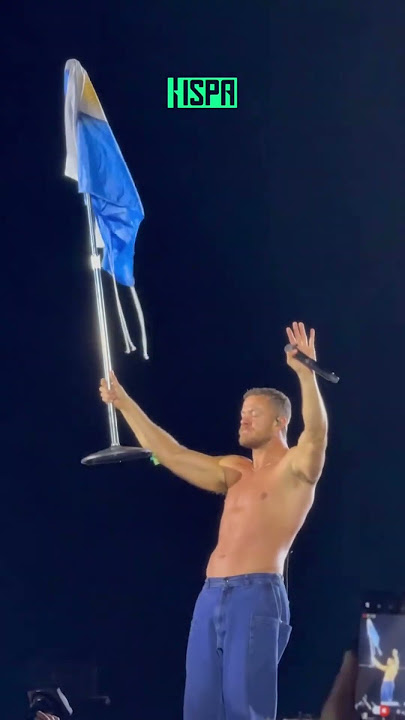
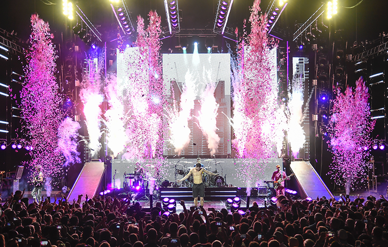
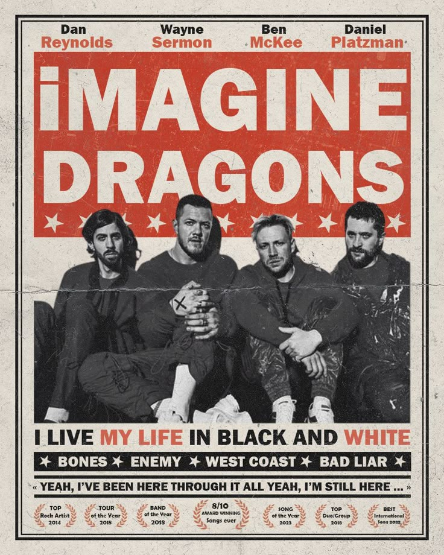
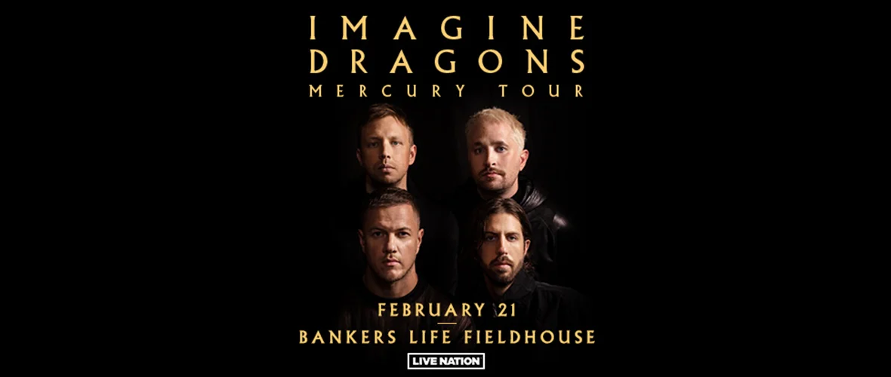

Giras Oficiales de Imagine Dragons

Night Visions Tour (2012–2014)
Primera gira mundial grande de la banda. Incluyó shows en Estados Unidos, Europa, Latinoamérica y Oceanía.

Smoke + Mirrors Tour (2015–2016)
Gira internacional para presentar el álbum Smoke + Mirrors, visitando cinco continentes.

Evolve World Tour (2017–2018)
Más de 130 conciertos alrededor del mundo. Presentaron éxitos como “Believer”, “Thunder” y “Whatever It Takes”.

Origins Tour (2019)
Gira para el álbum Origins. Incluyó conciertos en diversos países de Europa, América y Asia.

Mercury World Tour (2022–2023)
Una de las giras más grandes — recorrieron América, Europa, Asia y Medio Oriente presentando Mercury Act 1 y 2.

Loom World Tour (2024–2025)
Gira del álbum Loom. Recorrido mundial con nuevas fechas. (2025).